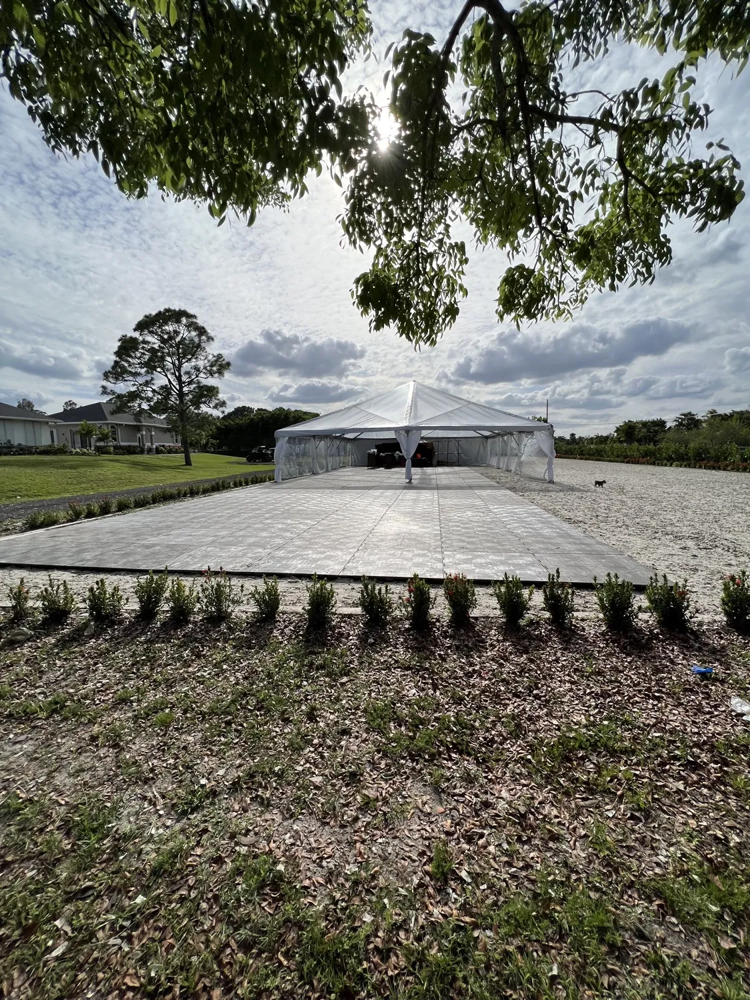
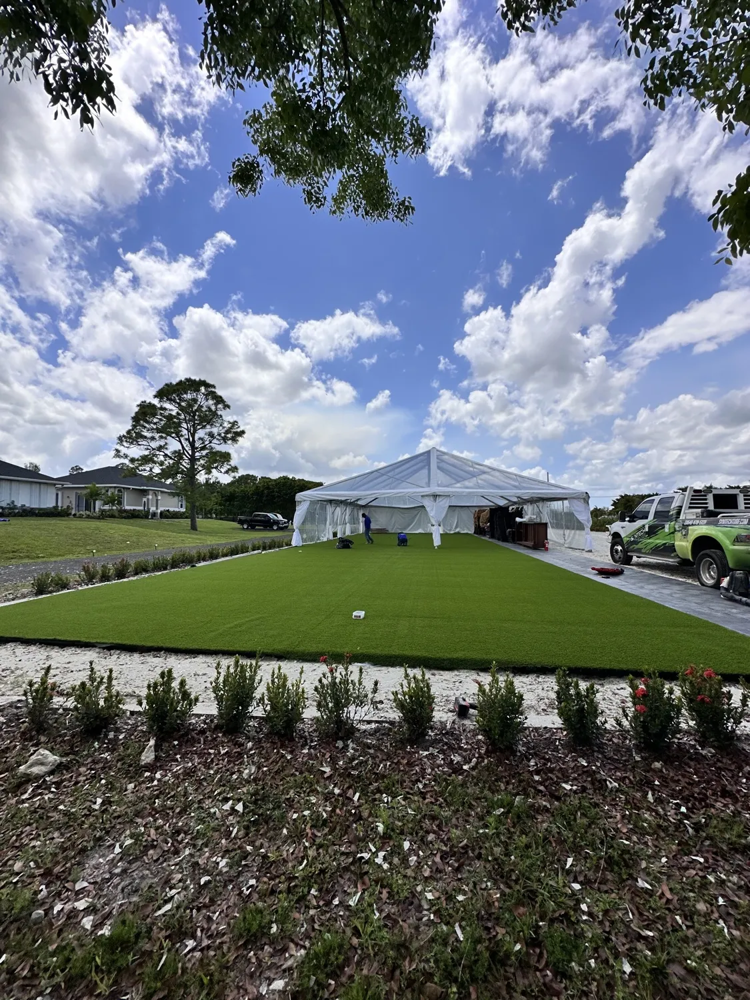
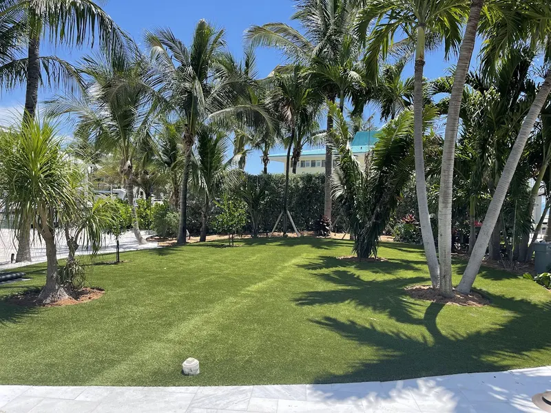
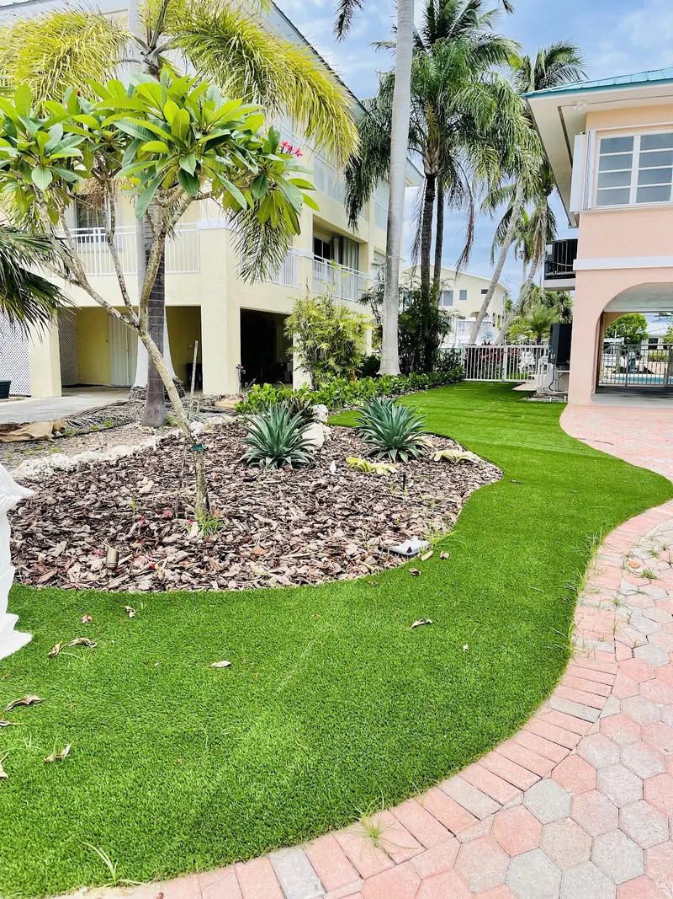
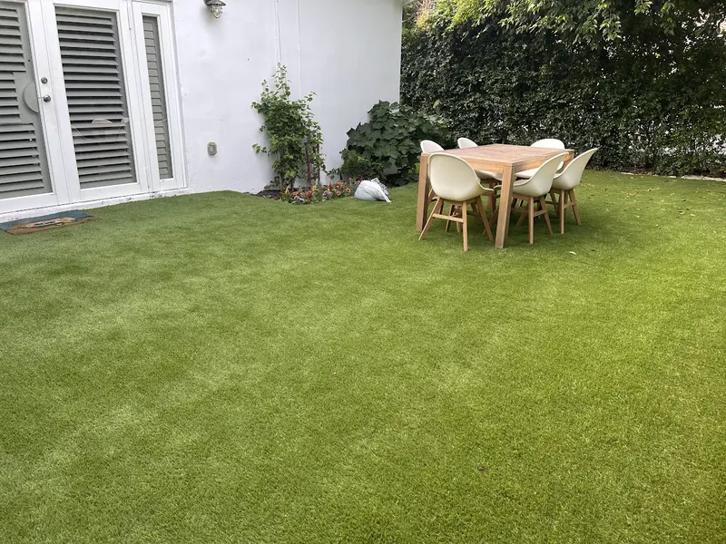
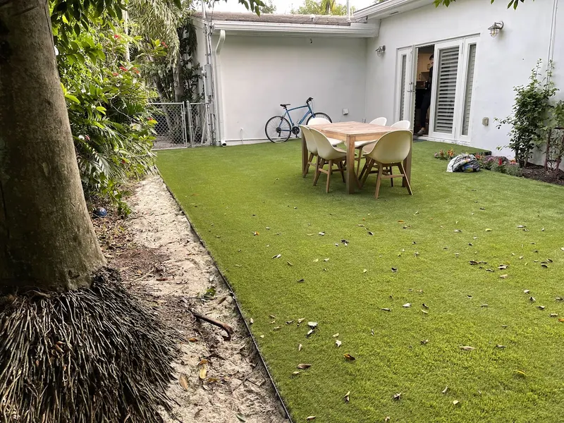
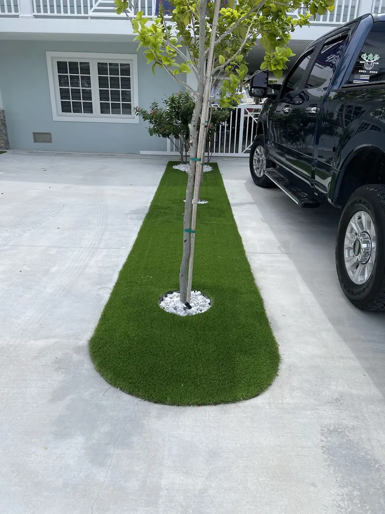
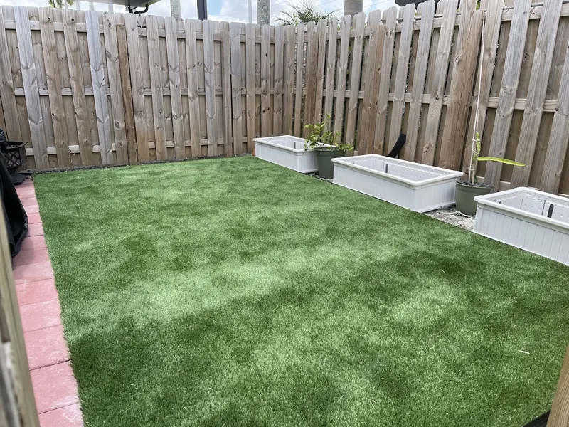

Why homeowners switch.
Southwest Florida lawns fight heat, sandy soil, shade from palms and oaks, and watering restrictions. Turf ends the cycle of resodding, fertilizing and mowing, and it looks the same in March as it does in September.
- No mowing or watering. A rinse and a brush is the upkeep.
- Stays green. No brown patches from drought, grubs or chinch bugs.
- Built to drain. Rain goes through the turf and the compacted base, not across your patio.
Commercial & event lawns.
The same build works beyond the backyard: storefronts, offices, rental properties and event spaces that need to look green and finished every day, with no mowing crew and no muddy patches after rain.
One event venue went from bare ground and a temporary floor to a full turf lawn around the tent. See it in the photos below.
How we build it.
Every AJ Turf install is built the same way. We outline the area with 6-inch metal or plastic edging, pour a 3 x 3 x 3 inch concrete border along the inside of it, lay a weed barrier over everything, then glue the turf edges to the concrete with turf glue that carries a 15-year warranty.
Most installers pin turf down with 6-inch steel spikes driven through the whole lawn. Spikes work loose, can hurt bare feet and paws, and tear the backing over time. A glued edge is safer and lasts longer.
Real projects, start to finish.
Real jobs.
Drag to see more →







Good to
know.
How do you price a yard?
In person. We measure on site and give you one exact written price, and the estimate is free. Turf comes in 15-foot-wide rolls, so every quote includes a standard allowance for cuts around your yard's shape.
How long does an install take?
About two days for every 1,000 square feet, depending on the site.
How do payments work?
30% to put your install on the schedule, 35% on the first day on site, and the last 35% when the job is done and you've walked it with us.
Why a concrete border instead of spikes?
Spikes driven through a lawn can work loose, hurt bare feet and paws, and tear the turf backing. Gluing the turf edge to a poured concrete border holds it down without anything sticking up, and it lasts longer.
What happens to my sprinklers?
Existing sprinkler heads are capped and left in place, not ripped out. That keeps your system intact, and a quick run of water is an easy way to rinse and cool the turf on hot days.
What's the warranty?
Turf carries the manufacturer's warranty for the product you choose (8, 16 or 25 years depending on the product), covering UV stability and strength; installation is covered by AJ Turf's 1-year labor warranty. You'll see the exact warranty for your product before you sign.